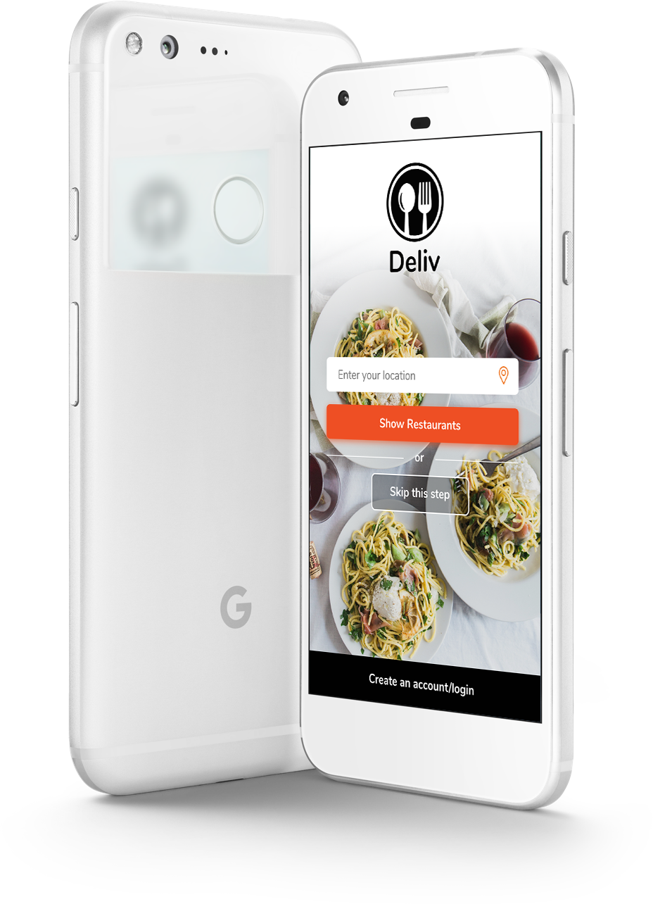
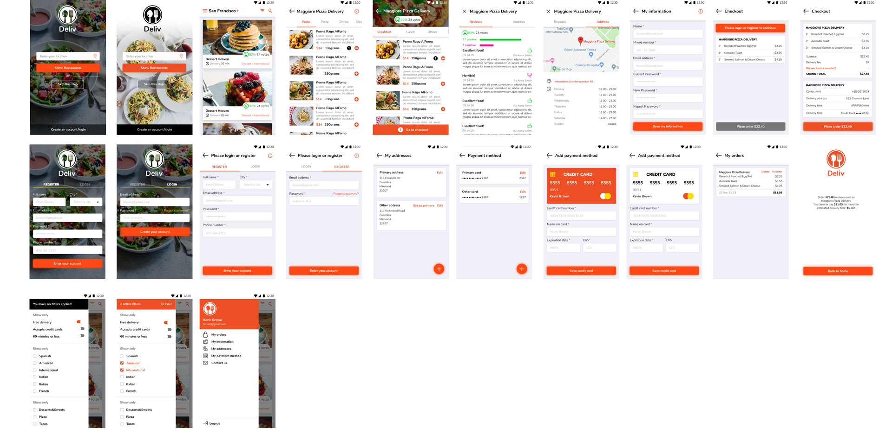
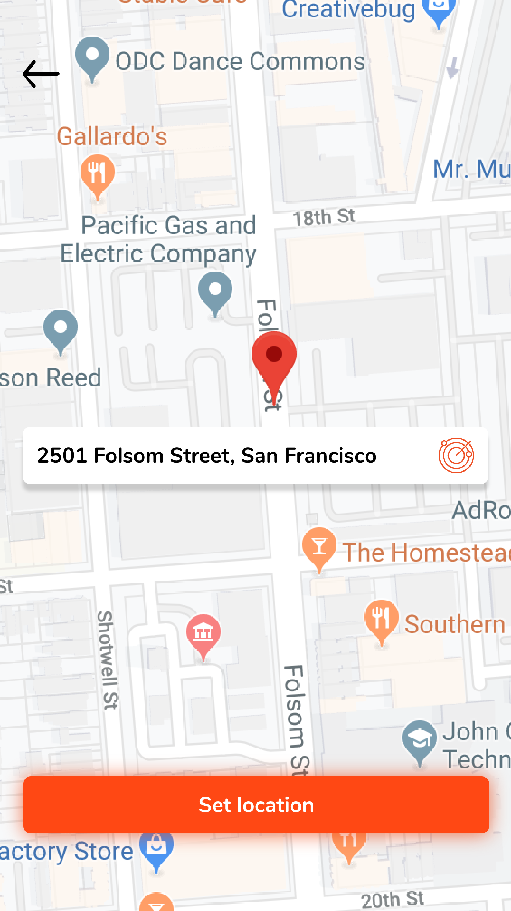
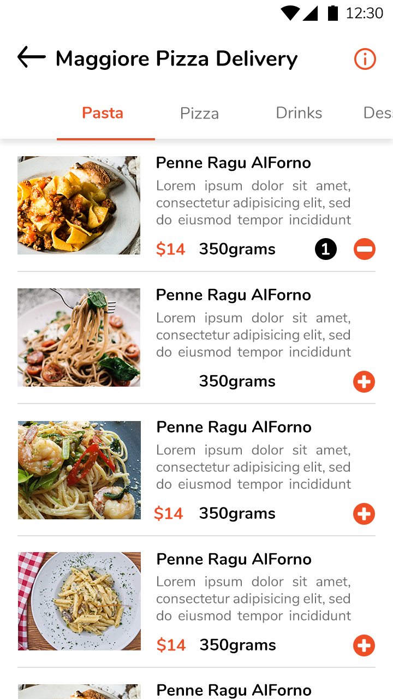
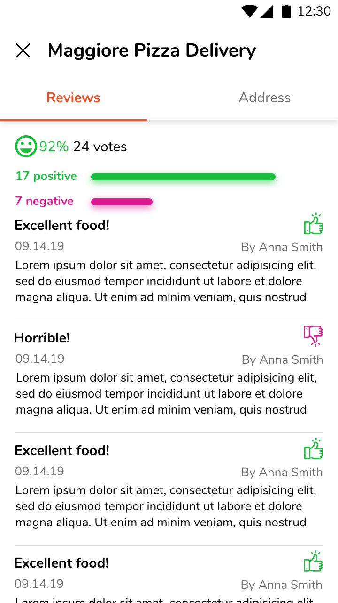

Food delivery app
This prototype was designed for Android and bring the user from browsing through differnt restaurant option up to placing an order. The main idea was to provide the user with a possibility to explore the restaurants first and only after, when placing an order, register on the platform if he/she is still not registered. Vivid red is the primary color, therefore primary buttons, icons and other elements use this color. The prototypes with over than 30 screens have been designed using Photoshop and Adobe XD.
Follow the link to see the interactions
 








Check out the video prototype, which was also created with Adobe XD.